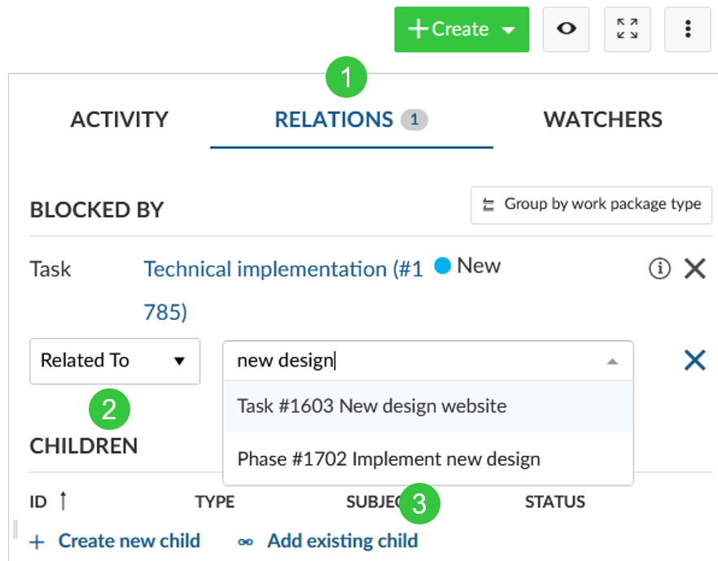
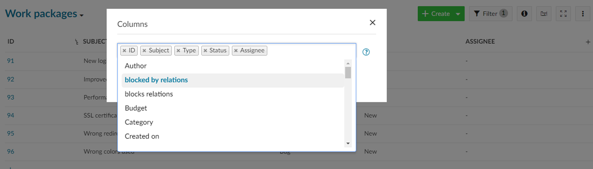
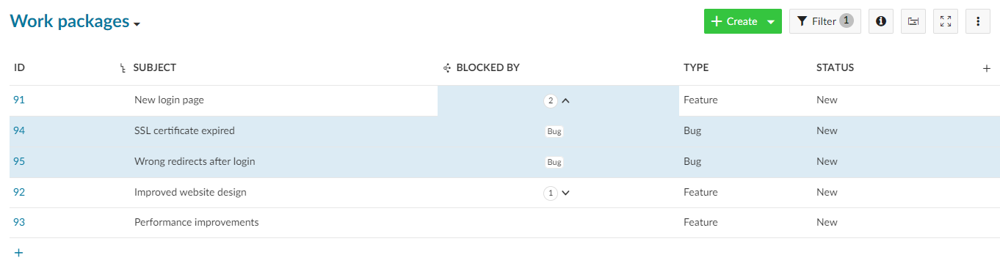
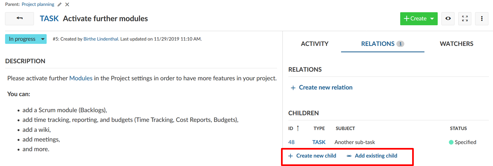
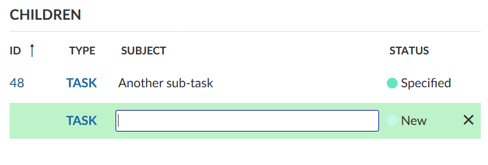
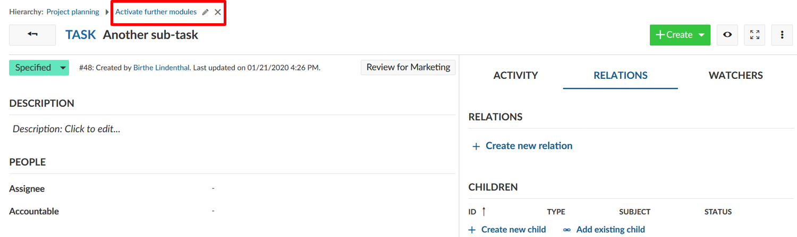
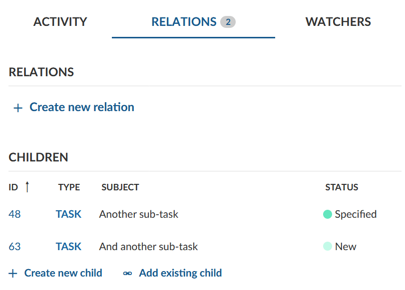
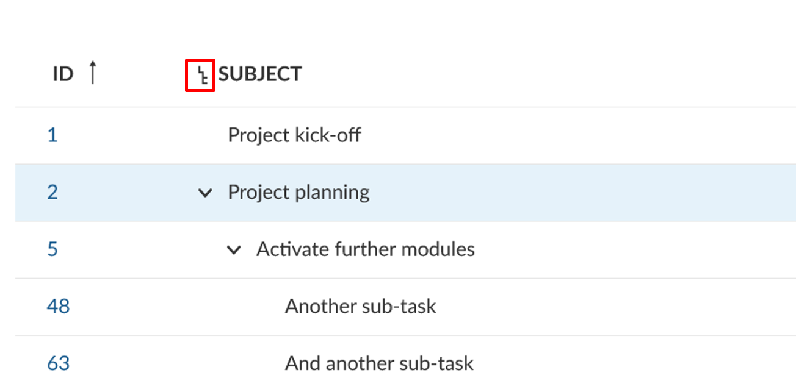
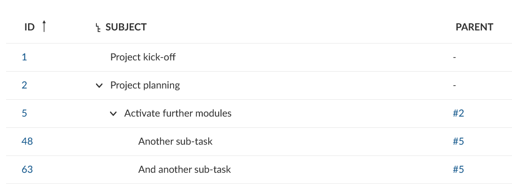

You can create work package relations and hierarchies.
Relations indicate any functional or timely relation (e.g. follows or proceeds, blocked by, part of, etc.). Hierarchies are a hierarchical relation (parent-child relationship).
| Topic | Content |
|---|---|
| Work packages relations | How can I set a relation between two work packages and which relations can I set? |
| Display relations in work package list | How can I display the relations between two work packages in the work package list? |
| Work package hierarchies | What are work package hierarchies? Learn about parent and children work packages. |
| Adding a child work package | What are the possibilities to add children work packages? |
| Change the parent work package | How can I change a work package’s parent? |
| Display work package hierarchies | Where can I find out about a work package’s children and parent? |
Work package relations indicate that work packages address a similar topic or create status dependencies. To create a relationship between two work packages:

You can select one of the following relations:
The selected relation status will be automatically displayed in the work package that you enter. For example if you select “Blocks” in the current work package A and specify work package B, work package B will automatically show that it is “Blocked by” A.
As a user of the Enterprise Edition or Cloud Edition you can display relations as columns in the work package list.
This is useful if you want to get an overview of certain types of relationships between work packages. You can for example see which work packages are blocking other work packages.
To add relation columns, open the columns modal and select a relation from the dropdown menu (e.g. “blocked by relations”).

The relations column shows the number of relations each work package has for the relation type (e.g. “blocked by”).
You can click on the number to display the work packages which have the relation type.

Work packages can be structured hierarchically, e.g. in order to break down a large work package into several smaller tasks. This means that there’s a parent work package that has at least one child work package.
There are three ways to add or create a child work package:
Open a work package and select the tab Relations. Click on + Create new child to create a child work package. Alternatively, you can assign an existing child work package with + Add existing child.

Insert the name of the new work package and save the newly created work package by pressing Enter. You can make changes to the work package by clicking on the work package ID.

For more information on the work package creation take a look at the guideline on creating a work package.
To edit or remove the parent of a work package open the work package. At the top of the details view of the work package you will see the work package hierarchy. Click on the Edit or delete icon to change the work package parent.

After adding the parent and child work packages they are listed in the Relations tab. Note that only the direct parent and children are shown in the relations tab.

Hierarchies can also be displayed from the work package list view. To display work package hierarchies make sure the Subject column is displayed. You can activate or deactivate the hierarchy by pressing the icon next to the Subject.

You can also add a column with information about parent work packages:
